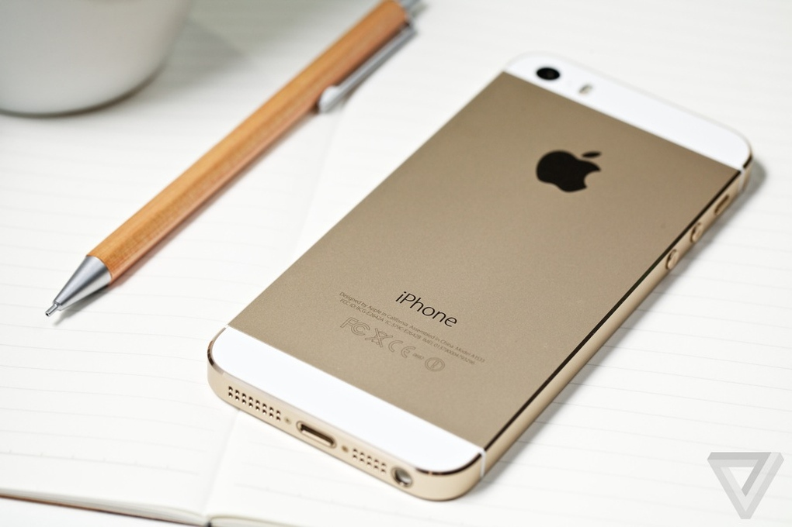
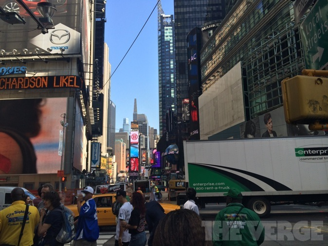
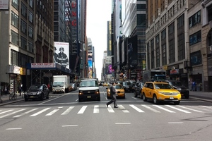
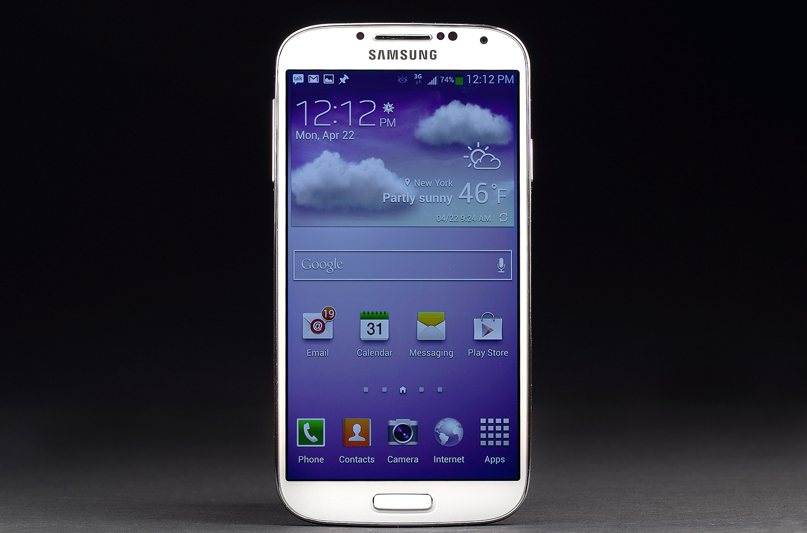
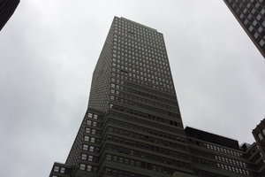

Htc One review
Htc One review
| Home | History Of smartphones | Reviews | Best cameraphones | Best smartphones of 2013 |
Best Cameraphones
iPhone 5S

Apple once again proved that it can make amazing cameras.Yes,the IPhone's got the same megapixel count as its predecessor but let me tell you megapixels dont equal quality.Whats more important here is that now the sensor is bigger which enables it to capture more light and take better photos when the lighting is bad.It's also got a two-toned flash which sense the temperature of the suroundings and fire both flashes-amber and white in the right ratio to produce more natural looking photos.Photos taken by the IPhone 5S look much better than the previous one.In daylight photos look even gorgeous sharp,saturated and crisp.Video taken by the IPhone 5S still remains among the best maybe the best and now there is even an option to record video in slow motion.It allows you to capture 720p video in 60 or 120 fps and then plays back at 30fps.Overall,camera on the IPhone 5S still remains an excellent overall performer with the most consistent photos in any conditions.Look at some camera samples and judge for yourself:



LG G2

The G2's spec sheet bravado marches on with its 13-megapixel camera with optical image stabilization. It has a scratch-resistant sapphire crystal glass lens and can shoot 1080p video at 60 frames per second. It also has 9-point autofocus and rapid capture ' it's one of the fastest smartphone cameras I've ever used.
LG practically stole Samsung's camera interface and shooting modes and slapped them on the G2, including the silly dual-camera feature and the ability to remove unwanted photobombers. That's not really a bad thing ' the camera app is one of the better ones in the Android world, and it gives you quick access to a variety of shooting parameters, provided you stick to one of the standard camera modes.
LG advertises the G2's low-light capabilities thanks to its stabilized lens, but as we have seen with the HTC One and Nokia Lumia 920, optical stabilization only helps keep the camera still ' it does nothing for you if your subject isn't stationary. The G2 takes great pictures outdoors and in good lighting, and it can hold its own indoors. But what I really want is a smartphone that can keep up with my speedy toddler, and we're not quite there yet. Despite all of its spec sheet braggadocio, the G2's camera is merely good, not mind-blowingly great. It is, however, leaps and bounds ahead of the Nexus 4's camera, so perhaps we'll finally have a Nexus device that can take a decent picture.



Nokia Lumia 1020


Although nearly everything else about the 1020 is newer and better than the 808, Nokia didn't touch the ridiculous camera much. Thanks to a huge 1/1.5-inch sensor, the 1020 takes better pictures than any phone I've ever used (including the 808), and is better in most conditions than just about any $299 point-and-shoot camera. From the remarkable dynamic range to the astonishing clarity, it's just a phenomenal camera. I spent a long time looking at photos for imperfections, only to find that most photos had none. I don't know how Nokia does it, or how no one else has figured out what Nokia is doing, but clearly there's some kind of magic happening in Finland.

The Lumia has a 41-megapixel sensor, but because of the physics of square sensors and round lenses, you're limited to 34- or 38-megapixel shots depending on your settings. (I use "limited" in the loosest of ways.) The pictures you'll mostly see, save, and share are even smaller, at five megapixels. Each pixel in the final image is determined by oversampling the seven pixels around it; Nokia calls the result a "super pixel." (Superpixels are of course not to be confused with HTC's Ultrapixels, which are a different kind of overbranded silliness.) Either way, in the end, Nokia's oversampled images give you the accuracy of a 41-megapixel image in the frame (and file size) of a much smaller shot. It obviously works, too ' at normal sizes for Facebook or Flickr, images looked the same huge or small.

Shooting with so many megapixels has another benefit, too: a hugely powerful 6x digital zoom. Normally digital zoom is something to run far away from, because all you're doing is cropping a photo and losing lots of data along the way, but here there's plenty of data to go around. Thanks to really solid image stabilization, photos tend to be clear no matter how far you zoom. "Shoot first," CEO Stephen Elop said at the 1020's launch event, "zoom later." He's right: I took dozens of shots with the Lumia 1020 while much too far away from my subject, and then zoomed in later to get the exact shot I wanted.
There's even a handy tool for zooming and re-framing your photos in Nokia's Pro Cam app, which will then let you save the cropped photo next to the full one.

One huge photo becomes many small photos, which is a great system for taking pictures. Pro Cam governs every advanced setting and feature of the 1020's camera ' it's one of the best such apps I've ever used. It better be, too, because if you shoot in any other camera app (including the stock Windows Phone Camera app) you lose almost every feature the 1020 offers and are limited to 5-megapixel shots.
Changing settings in Pro Cam is easy and offers immediate feedback ' tap on White Balance and scrub through the semicircle of options to see exactly how it'll look with a particular setting. It's really useful, but could stand to be a little bit faster: the camera can occasionally lag for a moment while it re-renders the frame with your new settings.
Galaxy S4

While HTC is trying to convince buyers that megapixels don't matter, and that its so-called Ultrapixels are better anyway, Samsung went the opposite direction. I don't know if all the pixels in the Galaxy S4's 13-megapixel sensor are the reason, or if I should credit Samsung's fast processor or the clear attention paid to its software, but the upshot is that the GS4's camera is the best Android camera I've ever used by a considerable margin, and in most cases it's every bit as good as the iPhone 5's camera.
However, the One and the Nokia Lumia 920 do considerably better than the GS4 in poor lighting. When it's dark, the GS4 takes the same soft, noisy pictures as any other smartphone camera, but without the incredible brightness capabilities of the One ' there are pictures you'll get with the One or the 920 that the GS4 just can't capture. The GS4's autofocus stumbles in low light, too; I learned quickly to take three shots at night, in order to get one that was properly focused.
It's actually Samsung's experience with dedicated cameras that make shooting photos with the GS4 so nice. The company borrowed a lot of the GS4's camera software from the Galaxy Camera, a concept car of sorts that clearly informed its ability to build a great cameraphone. The interface is much improved over the S III, from the scrolling Mode dial to the one-press capture of either stills or video. It's also simple and fast, two things many cellphone cameras are not.

